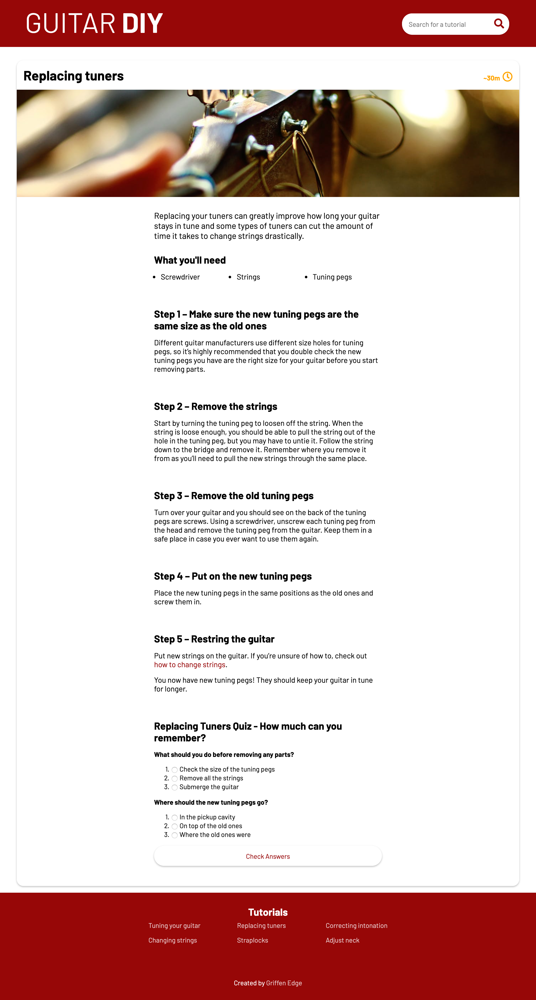

Guitar DIY
A university project to teach people the basics of guitar maintenance and improvements.
Check out the website!

A university project to teach people the basics of guitar maintenance and improvements.
Check out the website!